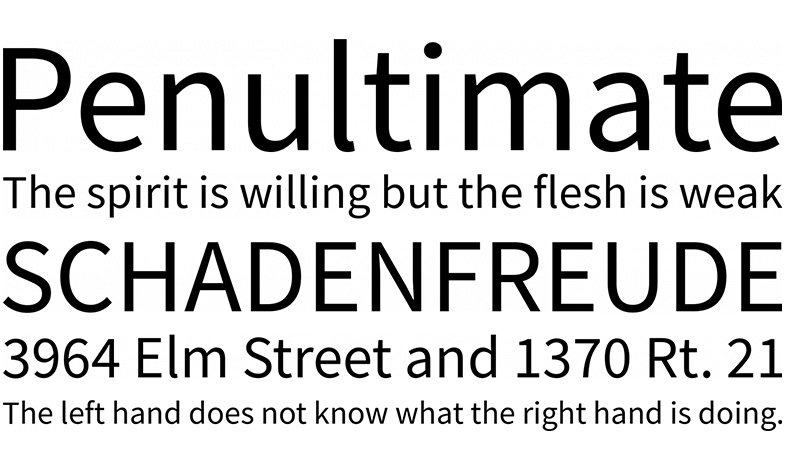
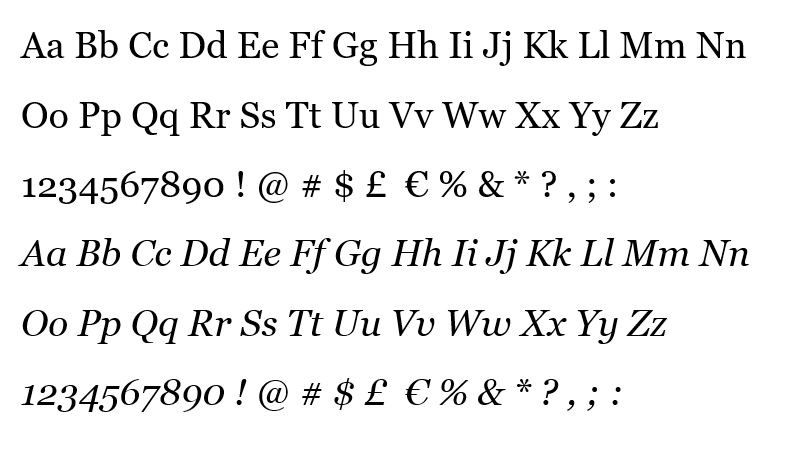

Colores
Tipografías

Source Sans Pro
Se inspira en la claridad y legibilidad de los diseños tipográficos góticos estadounidenses del siglo XX. Diseñada por Paul D. Hunt bajo la dirección de Robert Slimbach.

Georgia
Muestra una serie de características tradicionales de los tipos de letra serif "racionales" de principios del siglo XIX. Diseñada en 1993 por Matthew Carter e insinuado por Tom Rickner para Microsoft Corporation.